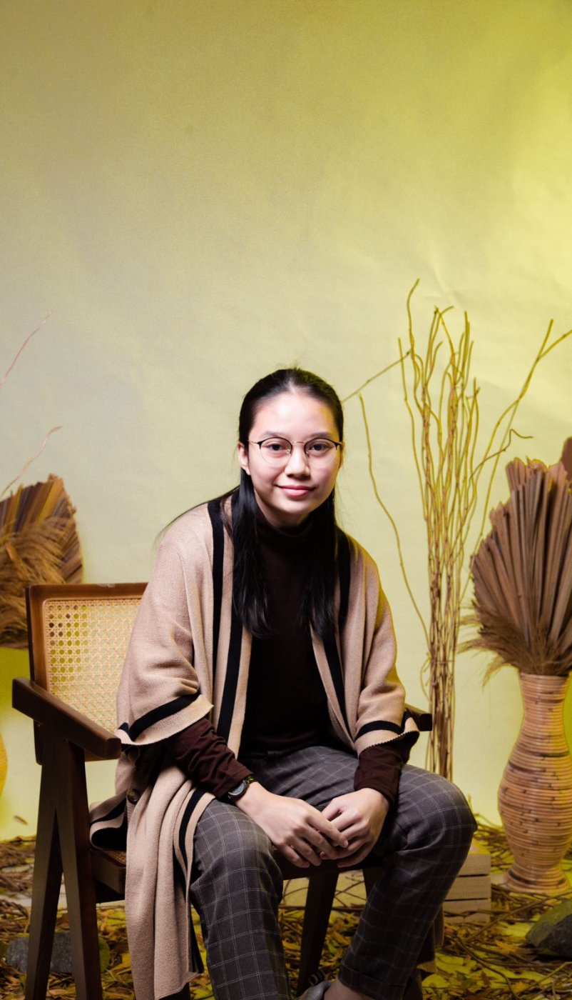

ICoSI 2026 (BIOXPLORE)
August, 2026
Quality Assurance · System Analyst · Frontend Developer · Data Analyst
I'm a Computer Science graduate from BINUS University. I test features, validate APIs and data, and turn requirements into clear specs, with hands-on frontend experience from Indotrading.com to back it up.

I'm an Informatics Engineering graduate from BINUS University (GPA 3.59/4.00) who enjoys the part of software most people skip: checking that it actually works.
At Indotrading.com, I worked as a Front End Developer. Besides building pages, I resolved 100+ bugs across UI, performance, APIs, and cross-browser issues, tested APIs in Postman, and ran QC on OmsetAI features such as WhatsApp, CRM, invoicing, and authentication. That work showed me I'm most useful where quality and requirements meet.
On the analysis side, I've turned questionnaires into user stories, user stories into technical tasks, and requirements into use cases, sequence diagrams, and prototypes, all inside Scrum teams.
Today I'm focused on Quality Assurance, System Analysis, and Data Analysis. I bring a developer's understanding of how things are built to the job of making sure they're built right.
Empat area yang saya kerjakan sehari-hari, dari memahami kebutuhan sampai memastikan hasil akhirnya benar-benar berfungsi.
Requirement gathering, flow & use case diagram, dokumentasi SRS untuk kebutuhan yang jelas dan terukur.
HTML, CSS, JavaScript, serta integrasi API untuk membangun antarmuka yang responsif dan enak dipakai.
Manual & exploratory testing, penyusunan test case, serta pelacakan bug dari laporan sampai rilis ulang.
Git, Figma, dan papan kerja seperti Trello/Jira untuk menjaga dokumentasi dan progres tim tetap rapi.
Contoh proyek di bawah ini — ganti dengan studi kasus dan tautan proyek Anda sendiri.
Aplikasi untuk mencatat stok bahan baku, mengelola pesanan kue, dan merangkum laporan penjualan Jinot Bakehouse dalam satu dashboard.
Lihat detail →Merancang ulang tampilan dashboard agar klien lebih mudah melacak status pesanan dan riwayat transaksi secara real-time.
Lihat detail →Menyusun skenario pengujian dan checklist QA untuk alur checkout agar setiap rilis lebih stabil dan minim regresi.
Lihat detail →Kursus dan sertifikasi yang menopang cara saya bekerja, dari analisis kebutuhan sampai pengujian sebelum rilis.
August, 2026
April, 2026
August, 2025
March, 2025
March, 2025
February, 2023
Terbuka untuk kolaborasi proyek web, kebutuhan analisis sistem, atau bantuan QA sebelum rilis produk Anda.